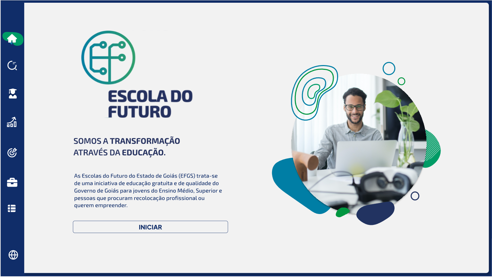
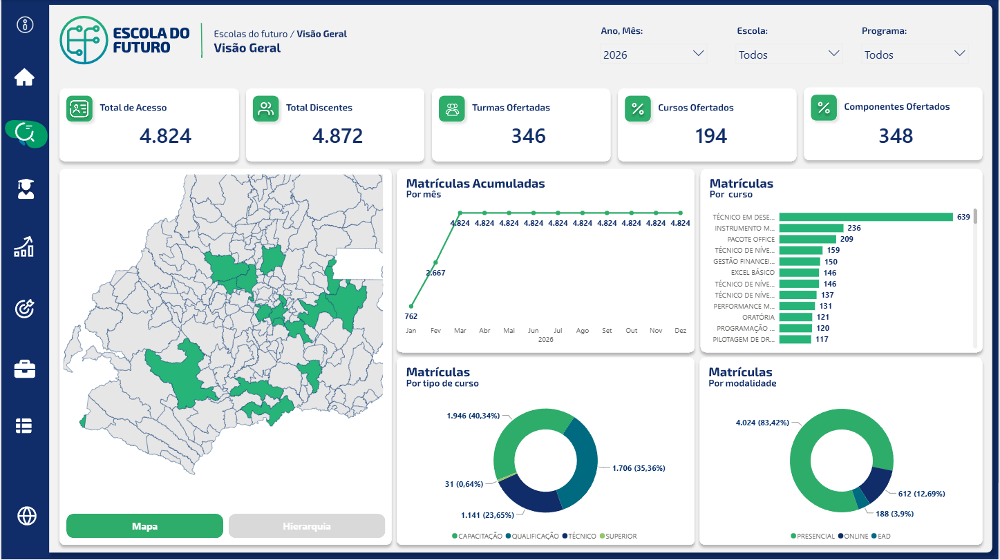
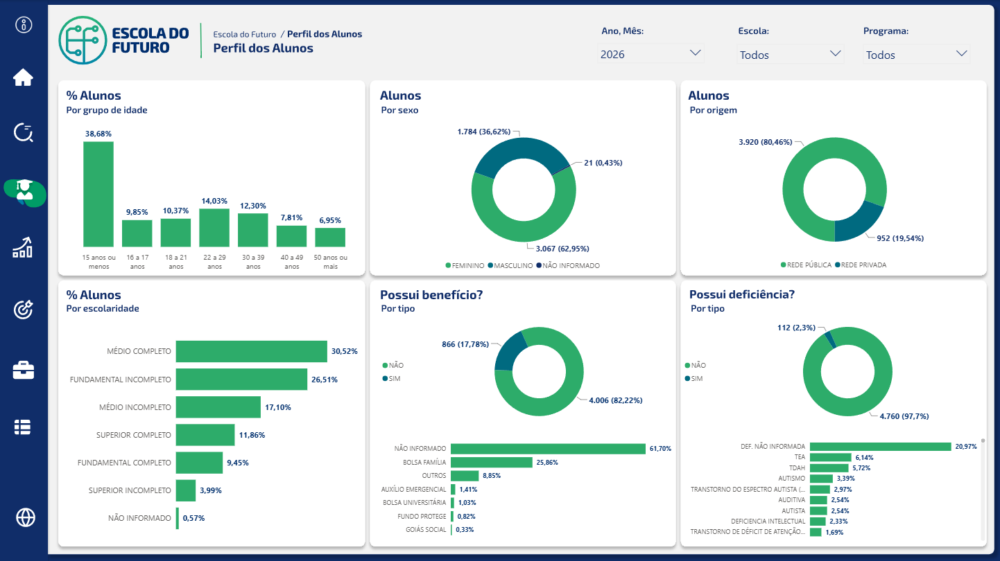
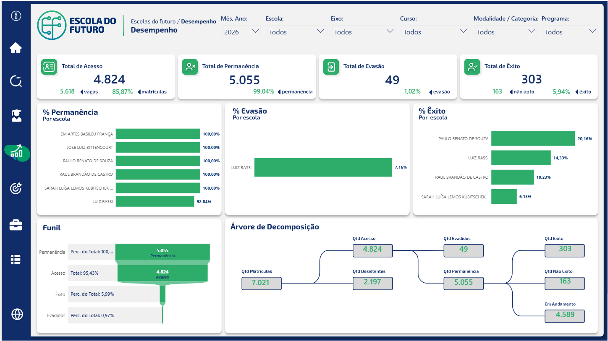
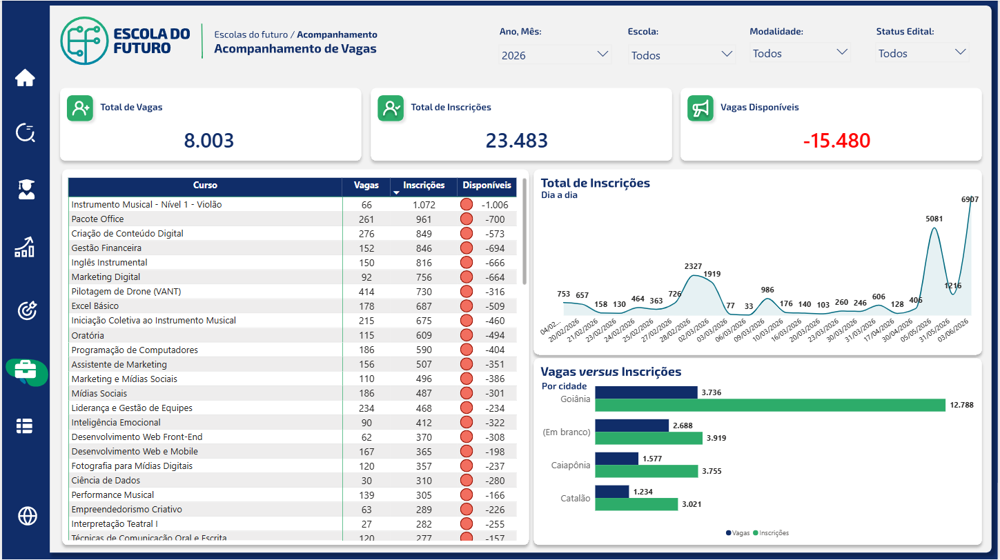
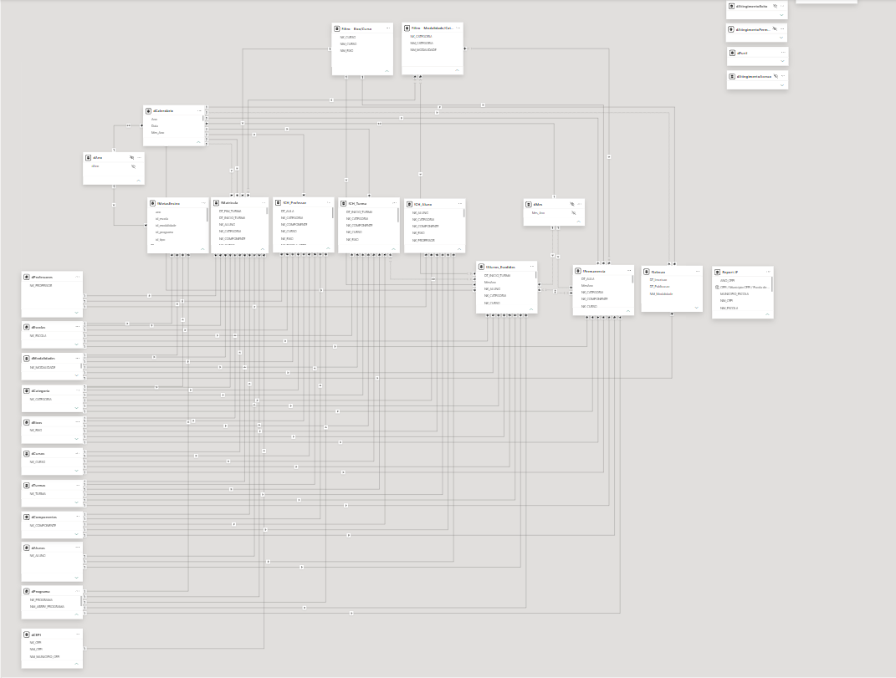

Plataforma analítica desenvolvida para acompanhamento acadêmico, operacional e estratégico das Escolas do Futuro do Estado de Goiás, fornecendo indicadores para gestão de alunos, cursos, desempenho, vagas e resultados institucionais.
As Escolas do Futuro do Estado de Goiás representam uma iniciativa estratégica voltada para capacitação profissional, inclusão social e formação tecnológica. O projeto teve como objetivo consolidar dados acadêmicos, operacionais e administrativos em uma única plataforma analítica, permitindo maior visibilidade sobre os resultados educacionais e suporte à tomada de decisão.

Tela inicial da plataforma contendo acesso aos módulos analíticos e identidade visual institucional.

Painel executivo contendo indicadores estratégicos de acesso, matrículas, cursos ofertados, componentes curriculares, distribuição geográfica e evolução da operação educacional.

Análise demográfica e socioeconômica dos alunos, permitindo avaliar faixa etária, sexo, escolaridade, benefícios sociais e características da população atendida.

Monitoramento dos principais indicadores acadêmicos, incluindo permanência, evasão, acesso e êxito, proporcionando acompanhamento contínuo da efetividade educacional.

Painel voltado ao acompanhamento da relação entre vagas, inscrições e ocupação dos cursos, permitindo identificar oportunidades de expansão e gargalos operacionais.

Foi desenvolvida uma arquitetura analítica corporativa baseada em modelagem dimensional, integrando dados acadêmicos, administrativos e operacionais. A solução contempla entidades de alunos, matrículas, escolas, cursos, turmas, componentes curriculares, professores e indicadores institucionais.